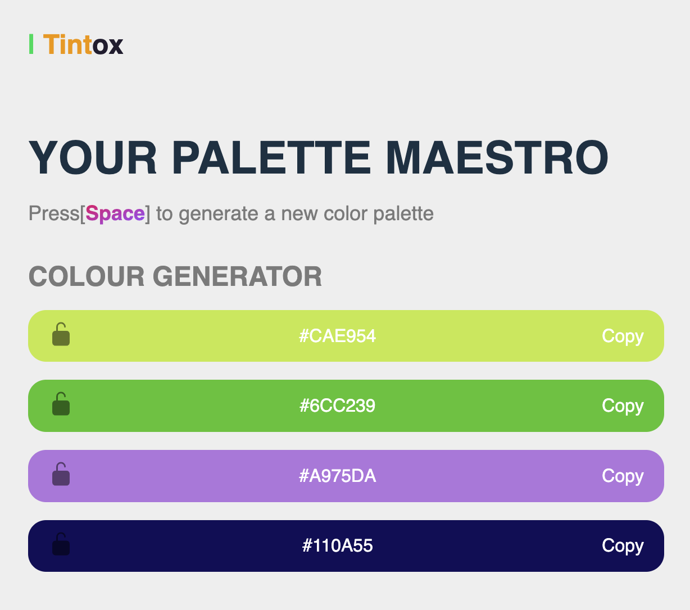

Tintox: Your Palette Maestro
Tintox is your ultimate color companion, unleashing a world of creativity at your fingertips. Instantly generate stunning color palettes for any project or mood. Whether you're a designer seeking inspiration or a hobbyist exploring new color schemes, Tintox offers a spectrum of possibilities.
Key features:
- Custom Color Palettes: Generate endless combinations or choose from curated palettes.
- Real-Time Preview: Visualize colors instantly for seamless decision-making.
- Lock & Share: Save or export palettes for use in design projects or share them effortlessly.
- Intuitive Interface: Easy-to-use tools for effortless color exploration.
From vibrant schemes to harmonious blends, Tintox empowers you to create, design, and express with the perfect palette in hand.